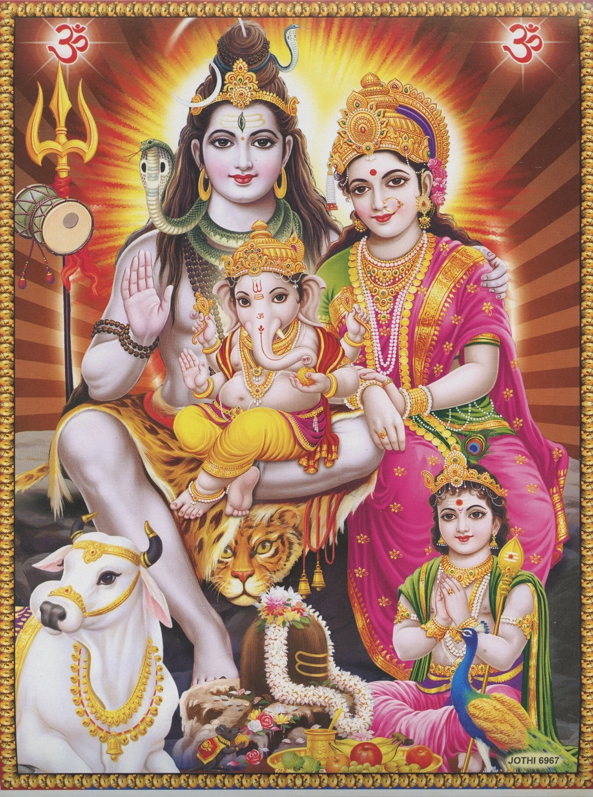
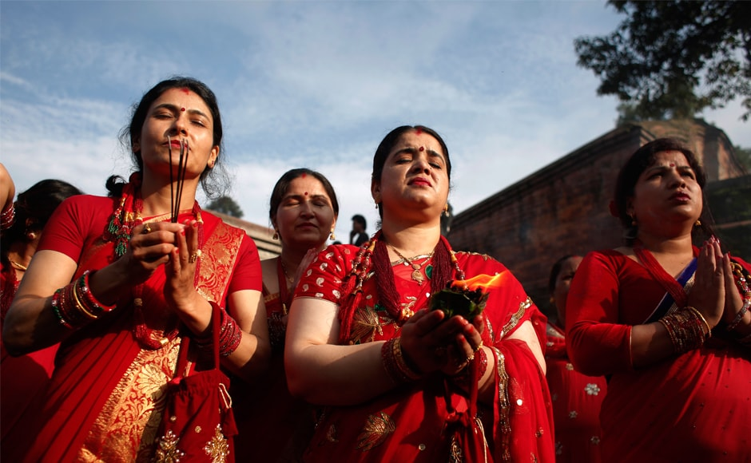
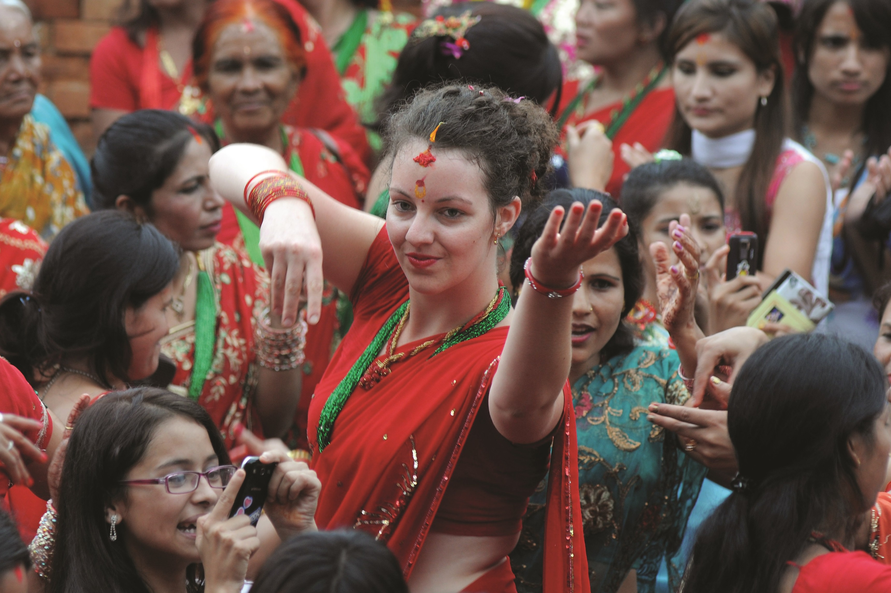

Teej Festival in Nepal is a holy festival of Nepali Hindu women celebrated with joy and hope. Teej, also known as Haritalika Teej, is a festival dedicated to Lord Shiva and Parvati. It is a three days long festival, in which women fast in the name of Lord Shiva for a long and prosperous life of their husband. Teej is also popular as a Women’s festival in Nepal. Both married and unmarried women celebrate Teej. The festival started as a sacred festival of Brahmin and Kshetriya caste and is now joined by women of other ethnic groups too. Devotees of Lord Shiva come together on this auspicious day to worship Lord Shiva and Parvati. Nepali women celebrate Teej on the third day of Bhadra Shukla, according to the Nepali lunar calendar. According to the English calendar, the festival occurs during late August and early September. It falls during the monsoon season, so there is a high probability of rainfall during Teej. A huge crowd is seen at Pashupatinath temple, a sacred temple for Lord Shiva’s pilgrims. Women especially wear red attire and dance on folk music that adds flavor to traditional values. Women decorate themselves with bangles, tika, and various ornaments on this day. To learn the significance of the color red and the rituals of Teej, keep reading.
Teej is a special festival among Nepali women. The day is declared as a public holiday so that women can wholeheartedly enjoy the joy of Teej. This traditional festival is based on a Hindu mythology that is said to take place in Satya Yug, the era of Gods. A gorgeous daughter Prajapati Daksha and Prastuti, Sati fell in love with Lord Shiva and wanted to get married to him. But, her father, being a King, wanted his daughter to marry a King. Lord Shiva was someone who wore tiger skin and a snake around the neck. He would carry a ‘Damaru’ and would always meditate. Lord Shiva looked no less than a beggar to Sati’s father. So, the King denied Sati’s desire to marry Lord Shiva and arranged her marriage with a rich King. Upon denial, Sati jumped into the fire. Lord Shiva grieved upon the death of his true love. Later, Sati reincarnated as Parvati to the King Himalaya. Parvati prayed and took fasting to again unite with Lord Shiva. Finally, Lord Shiva was impressed by her determination and sincerity. He realized Parvati is his true love and accepted her as his wife.
This mythology holds a significant place in the Hindu religion. Teej is celebrated as the day when Lord Shiva and Parvati reunited. It is the celebration of relationship and true love. It is believed that the blessing of Lord Shiva and Parvati strengthens our love and marriage.
With the hope that unmarried women get a husband like Lord Shiva himself and married women have their husbands to live a long and prosperous life, women fast on Teej and worship Lord Shiva. Teej has religious importance as it is the day of celebration of the reunion of Lord Shiva and Parvati. A married woman worships their husband as God on Teej, and after the rigorous fasting, they take the first bite of food and drink the first drop of water from the hand of their husband. They bow down to the feet of their husband for blessings.Women are dressed in colorful traditional attire and wear heavy old ornaments to decorate themselves like a bride. Women call their women relatives, friends, neighbors, and gather to eat the feast. Then, they enjoy the festival by singing and dancing. They also exchange gifts to express their love and wrath to each other.
 